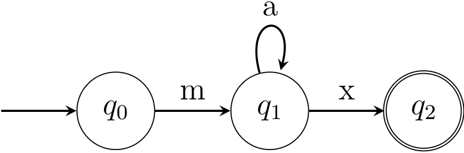

Nikolaus Mayer / Johannes Klug
Regex are useful (so they say)!
TODO: xkcd, Liane
But they can also be frustrating.
TODO: xkcd, 99 problems.
How would you extract the phone numbers of all these people with a python program?
Max Muster 01235/9123647
Eva Birne 034734/9349324
Adam Apfel +41(2352)3749237
{a,b,c,?,(,)}.
* What Python calls “regular expressions” is more powerful than that.
The finite automaton

recognizes the language {mx, max, maax, maaax, ...}.
This language is also described by the equivalent regular expression (ma*x)
* We can still do that, though — in a minute.
Groups “(...)” allow access to parts of the match.
>>> text = 'Max Muster +49(0761)123123'
>>> RE = re.compile(r'[\w\s]+\+?[\d()/]+')
>>> print RE.search(text).group()
Max Muster +49(0761)123123
>>> RE = re.compile(r'([\w\s]+)(\+?[\d()/]+)')
>>> print RE.search(text).groups()
('Max Muster ', '+49(0761)123123')
>>> RE = re.compile(r'([\w\s]+?)\s*(\+?[\d()/]+)')
>>> print RE.search(text).groups()
('Max Muster', '+49(0761)123123')
Named groups “(?P<groupname>...)” additionally allow identifiers for groups which can then be retrieved using a match’s .groupdict() method.
>>> text = 'Max Muster +49(0761)123123'
>>> RE = re.compile(r'([\w\s]+?)\s*(\+?[\d()/]+)')
>>> print RE.search(text).groups()
('Max Muster', '+49(0761)123123')
>>> RE = re.compile(r'(?P<Name>[\w\s]+?)\s*(?P<Number>\+?[\d()/]+)')
>>> print RE.search(text).groupdict().items()
[('Name', 'Max Muster'), ('Number', '+49(0761)123123')]
Using a backreference “(?P=groupname)”, a regex can reuse the matched text from the earlier named group “(?P<groupname>...)”.
Let’s try to identify monetary transactions where the recipient is the same as the donor:
>>> transactions = [# Everything ok
... 'DONOR: Bill Gates; RECIPIENT: Thomas Edison',
... # Suspicious transaction!
... 'DONOR: Max Muster; RECIPIENT: Max Muster'
... ]
>>> RE_suspicious = re.compile(r'.*: (?P<Donor>.*); .*: (?P=Donor)')
>>> for ta in transactions:
... match = RE_suspicious.search(ta)
... if match is not None:
... print '!!! Suspicious transaction by', match.groupdict()['Donor']
!!! Suspicious transaction by Max Muster
This exceeds the theoretical capabilities of formal “regular” expressions and languages.
Regexes normally match as much as they can, but sometimes that is not desirable, e.g. when parsing HTML tags:
>>> text = '<h1> Header </h1>' # We want the 'h1' tag
>>> RE = re.compile(r'<.*>') # Greedy
>>> print RE.search(text).group()
<h1> Header </h1>
Make greedy operators *,+,? non-greedy by appending a question mark: *?,+?,??:
>>> RE = re.compile(r'<.*?>') # Non-greedy
>>> print RE.search(text).group()
<h1>
IGNORECASE makes the regex case-insensitive UNICODE allows matching unicode characters DEBUG, MULTILINE, LOCALE
>>> re.compile(pattern, re.UNICODE | re.IGNORECASE | ...)
VERBOSE allows arbitrary whitespace and comments within the pattern and is useful when writing complex regexes.
>>> re.compile(r'''
... (?P<Name>[\w\s]+?) # Person's name
... \s* # (whitespace divider)
... (?P<Number>\+?[\d()/]+) # Person's phone number
... ''',
... re.VERBOSE)
Caveat: To match a literal whitespace when using this flag, it has to be escaped as “\s” or “\ ”.
This usage pattern is typical for “flags”: Their values are numbers with a single 1 in their binary representation:
re.UNICODE = 64 = 0x01000000
re.IGNORECASE = 32 = 0x00100000
When chained with “|”, the 1s accumulate:
re.UNICODE | re.IGNORECASE = 0x01100000
The runtime can then check which positions are 1.
Python’s “re” expressions do not support overlapping matches.
>>> text = '123 456 789 012 345'
>>> RE = re.compile(r'\d{3} \d{3}') # Two three-digit groups
>>> for match in RE.finditer(text):
... print match.span()
(0, 7) # 123 456
(8, 15) # 789 012; missing: 456 789, 012 345
Solution: DIY :P or use the regex module*
*https://pypi.python.org/pypi/regex